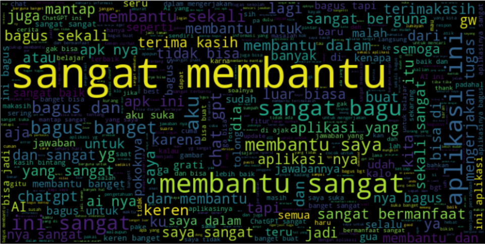
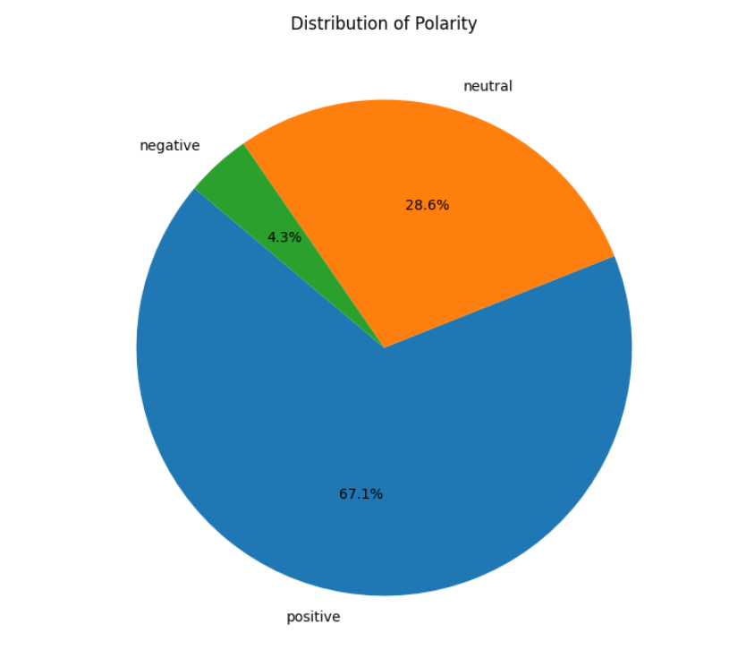
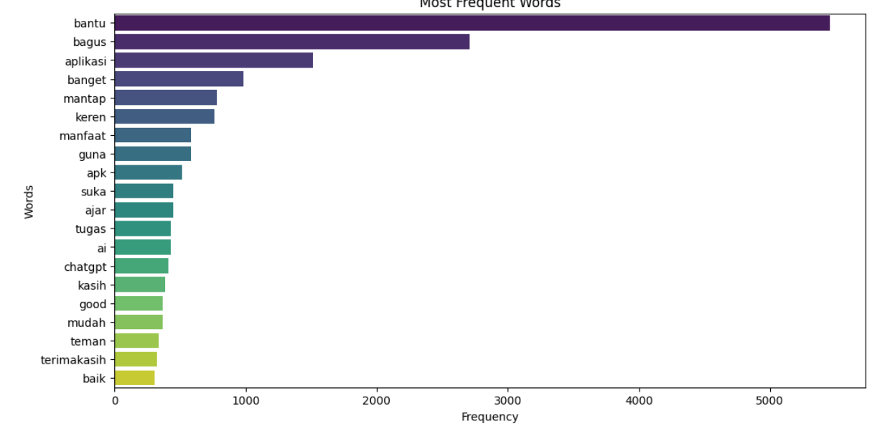

Reviews
Sentiment Classes
Highest Accuracy
LSTM vs GRU vs CNN
As the use of the ChatGPT app increases, the number of user reviews available on the Google Play Store continues to grow daily. These reviews contain a variety of opinions, experiences, criticisms, suggestions, and even user satisfaction levels, written in unstructured text. Manually processing thousands of reviews is time-consuming and resource-intensive, requiring an automated approach to understand the patterns and sentiments contained within them. This project was developed using techniques Natural Language Processing (NLP) to conduct sentiment analysis on ChatGPT user review data obtained through the web scraping process. NLP allows computers to understand, process and analyze human language so that important information hidden in text can be extracted effectively. Through a series of stages such as text preprocessing, data cleaning, text transformation, feature extraction, and classification processes, the system is able to group user reviews into three sentiment categories, namely positive, neutral, and negative. The results of this analysis can be used to understand user perceptions, identify application advantages and disadvantages, and become the basis for data-based decision making.

As the use of ChatGPT continues to grow, the number of user reviews available on the Google Play Store increases every day. These reviews contain various opinions, experiences, criticisms, suggestions, and levels of user satisfaction expressed in unstructured text. Manually processing thousands of reviews requires significant time and resources, making an automated approach necessary to understand the patterns and sentiments contained within them. This project was developed using Natural Language Processing (NLP) techniques to perform sentiment analysis on ChatGPT user reviews collected through web scraping. NLP enables computers to understand, process, and analyze human language so that valuable information hidden within textual data can be extracted effectively. Through a series of stages including text preprocessing, data cleaning, text transformation, feature extraction, and classification, the system is able to categorize user reviews into three sentiment classes: positive, neutral, and negative. The results can be used to understand user perceptions, identify application strengths and weaknesses, and support data-driven decision making.
The primary challenge of this research was handling noisy Indonesian social media review data containing slang words, informal expressions, and highly diverse writing styles. My responsibilities included developing a robust Indonesian text data preprocessing pipeline, conducting lexicon-based sentiment extraction, and designing as well as training three different Deep Learning architectures—LSTM (Long Short-Term Memory), GRU (Gated Recurrent Unit), and CNN (Convolutional Neural Network)—to compare their performance in accurately predicting sentiment on unseen data.
The experiments were comprehensively implemented using the Python ecosystem and major NLP and Deep Learning libraries. The key implementation stages included:
The system was connected to an Indonesian sentiment lexicon dataset hosted on GitHub using the Requests library to asynchronously load positive and negative word dictionaries. Polarity scores were then calculated to generate sentiment labels before the modeling stage.
Three model variations were developed and trained using the Keras / TensorFlow Sequential API with the following architectures:

This capstone research project was successfully completed, and evaluation on the test dataset revealed significant performance differences among the three architectures:
Overall, recurrent sequential architectures (LSTM and GRU) proved significantly more effective at understanding the semantic context of user reviews compared to the spatial CNN architecture. The trained models successfully demonstrated precise prediction capabilities on unseen review samples, making the solution a practical NLP prototype ready to be integrated into real-time digital product reputation monitoring systems.